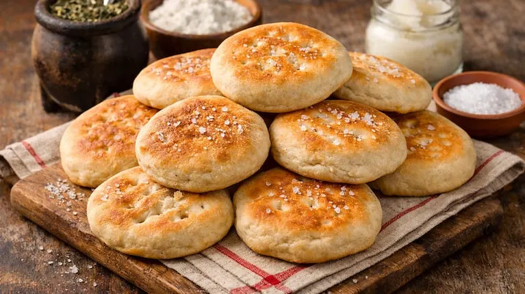

Semitas Caseras
Precio: $ Consultar
Estado actual: ● Con Stock Disponible
- Tanda de la mañana: Salen calientitas a las 08:00 hs.
- Tanda de la tarde: Salen a las 17:00 hs para el mate.
- Tanda a pedido: Si se acaban en mostrador, se hace una tanda nueva en 30 minutos.
¿Quién las elabora?
Alan Rojas.
Características del producto
- Masa criolla tradicional hecha con grasa vacuna refinada a mano.
- Chicharrones bien dorados y crocantes repartidos por toda la masa.
- Sabor casero con aroma único a horno de barro.
¿Cómo las prepara Alan Rojas?
- Dora los chicharrones a fuego lento y prepara la salmuera tibia.
- Forma un volcán con la harina, agrega la grasa, la levadura y amasa 15 minutos.
- Integra los chicharrones con cuidado para no romper la masa.
- Corta los bollos, los aplasta en forma circular y los pincha con tenedor.
- Las cocina en horno bien caliente hasta que quedan bien doradas.